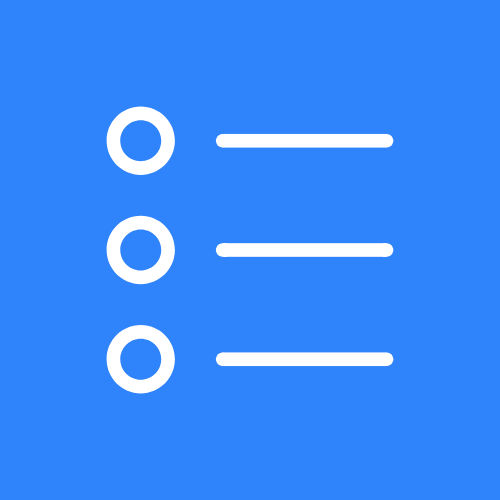

[CONTACT EMAIL], [LICENCE],
[CURRENCY] [AMOUNT] and [JURISDICTION] below,
then delete this box.
These terms govern your use of DesktopTasks (“the app”), a desktop widget for Windows that displays your Google Tasks, published by Aaryan Panigrahi (“we”, “us”).
By installing or using the app, you agree to these terms. If you do not agree, do not install or use it.
Contact: [CONTACT EMAIL]
The app reads your Google Tasks, with your permission, and displays them on your Windows desktop. It runs entirely on your own computer. We operate no servers and receive no data from you.
The app's access to your Google account is read-only. It cannot create, modify, complete or delete your tasks.
How your data is handled is described in the Privacy Policy, which forms part of these terms.
The app is provided at no charge. There is no subscription, no purchase, no advertising and no payment of any kind. We do not sell anything, and we do not collect payment information.
To use the app you must grant it access to your Google Tasks through Google's own sign-in flow. You are responsible for your Google account and for your compliance with Google's own terms.
You may revoke the app's access at any time at myaccount.google.com/permissions. Doing so stops the app from reading your tasks.
You must only use the app with a Google account you are entitled to use.
You may use, copy and run the app for your own purposes. You may not:
The app's source code is published at github.com/AaryanPanigrahi/DesktopTasks under [LICENCE, e.g. the MIT Licence]. Where that licence grants you rights in the source code, it governs; these terms govern your use of the distributed application and the OAuth client we provide with it.
If you build the app from source using your own Google OAuth client, you are operating your own instance of it. These terms, and our responsibility for it, cover only the builds we distribute.
The app is provided “as is” and “as available”, without warranty of any kind, express or implied, including without limitation any warranty of merchantability, fitness for a particular purpose, accuracy, or non-infringement.
We do not warrant that the app will be uninterrupted, timely, secure, or error-free, nor that the tasks it displays will be current, complete or correct.
Do not rely on the app as your only view of your tasks. It shows a periodic snapshot, it can show stale data when a connection or a sign-in lapses, and it may fail to display a task for reasons outside its control. Google Tasks itself remains the authoritative record.
To the maximum extent permitted by law, we will not be liable for any indirect, incidental, special, consequential or exemplary damages, or for any loss of data, profits, revenue, goodwill, or for any missed task, deadline, appointment or obligation, arising out of or relating to your use of or inability to use the app.
To the maximum extent permitted by law, our total aggregate liability arising out of or relating to the app will not exceed [CURRENCY] [AMOUNT] or the amount you paid for the app (which is nothing), whichever is greater.
Some jurisdictions do not allow certain exclusions or limitations, so some of the above may not apply to you. Nothing in these terms excludes liability that cannot lawfully be excluded.
The app depends on Google's APIs, which we do not control. Google may change, restrict, deprecate or withdraw access to those APIs at any time, which may stop the app working in whole or in part. We are not responsible for such changes and have no obligation to maintain, update or support the app.
While the app's Google Cloud project is in a pre-release state, Google may also expire the app's authorization periodically, requiring you to sign in again.
We may change, suspend or discontinue the app at any time. We may update these terms; the updated version will be published at this URL with a new “Last updated” date. Material changes will be noted in the app's release notes. Continuing to use the app after a change takes effect means you accept the updated terms.
You may stop using the app at any time by revoking its access to your Google account and uninstalling it. We may stop distributing the app at any time. Sections 7, 8 and 12 survive any termination.
These terms are governed by the laws of [JURISDICTION], without regard to its conflict-of-laws rules. The courts of [JURISDICTION] will have exclusive jurisdiction over any dispute, except where applicable law gives you the right to bring a claim elsewhere.
DesktopTasks is an independent application. It is not created, endorsed, sponsored by, or affiliated with Google LLC. “Google”, “Google Tasks” and related marks belong to Google LLC. Use of those names describes compatibility only.
These terms and the Privacy Policy are the entire agreement between you and us regarding the app. If any provision is held unenforceable, the rest remains in effect.